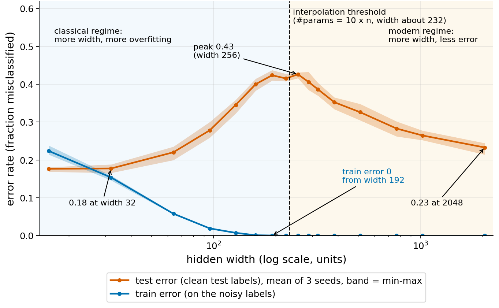
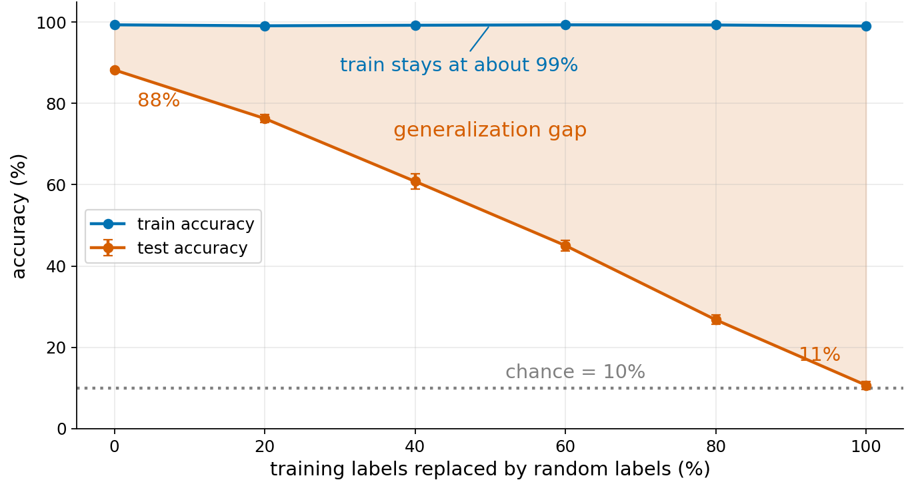

extends Lab 2 themes
Grokking

- Idea
- A small network learns modular addition. It fits the training set first, and validation accuracy jumps much later, with weight decay and data size deciding when. Connection: fitting the training data and generalizing are separate events, which is the question regularization addresses.
- How it could be used
- A 10-15 minute demo of one run, or a swap-in main experiment with a class grid of weight decay and train fraction.
Key paper: Power et al. 2022, Grokking: Generalization Beyond Overfitting on Small Algorithmic Datasets
extends Lab 2 themes
Double descent

- Idea
- Test error rises as a model grows, peaks when the model can just fit the training set, then falls again. Connection: it refines the capacity argument behind regularization, since more capacity can help beyond the point where training error reaches zero.
- How it could be used
- A 10-15 minute demo with a few widths, or a swap-in experiment where students fill in a grid of widths.
Key papers: Belkin et al. 2019, Reconciling modern machine learning practice and the bias-variance trade-off; Nakkiran et al. 2019, Deep Double Descent
extends Lab 2 themes
Random labels

- Idea
- A network can fit training labels that are pure noise, so low training error says little about test error. Weight decay and dropout help only a little. Connection: it tests directly what regularization can and cannot do.
- How it could be used
- A 10-15 minute demo at a few corruption levels, or a short warm-up segment with one regularizer per student.
Key paper: Zhang et al. 2017, Understanding deep learning requires rethinking generalization
extends Lab 2 themes
Lottery ticket

- Idea
- A small sub-network found by pruning trains faster from its original initial weights than from a fresh one. A network with untrained weights can reach 97% if only the mask is learned. Connection: it links sparsity, a form of regularization, to initialization.
- How it could be used
- A 10-15 minute demo at one sparsity level, or a swap-in main experiment with a class grid of sparsity levels.
Key paper: Frankle & Carbin 2019, The Lottery Ticket Hypothesis